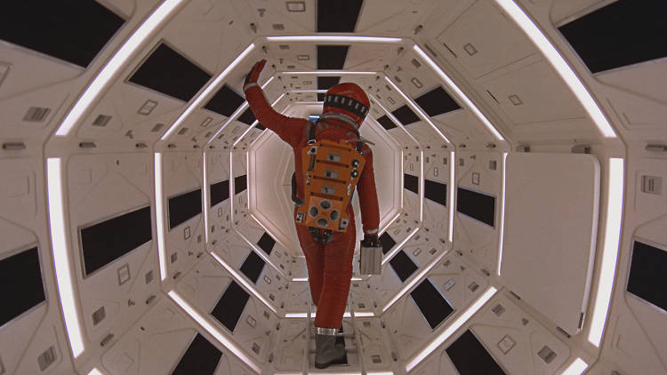
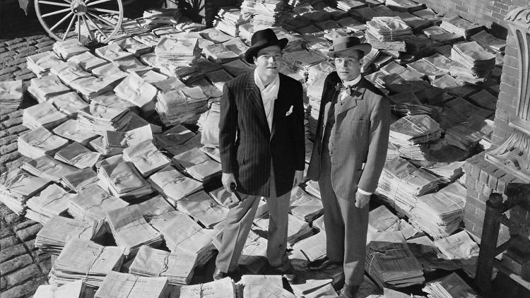
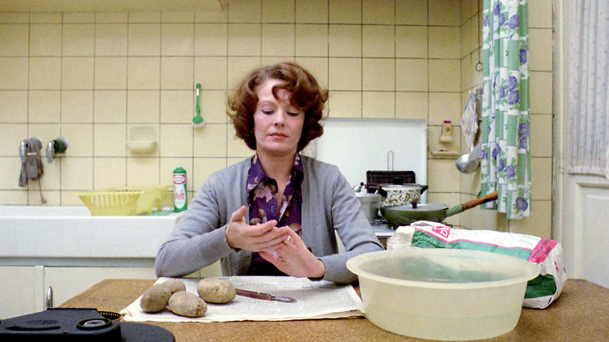
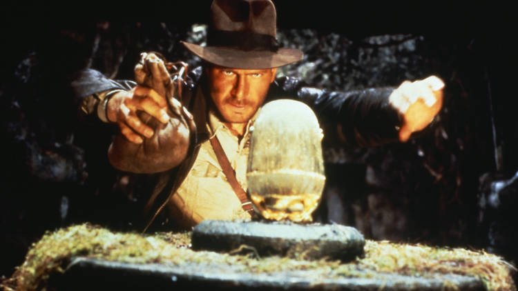
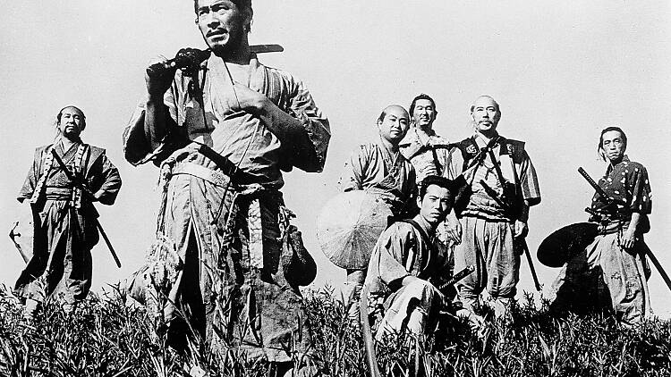

TOP 10 MOVIES

Details
Release details
Rated: U
Release date: Friday November 28 2014
Duration: 141 mins
Cast and crew
Director: Stanley Kubrick
Screenwriter: Stanley Kubrick, Arthur C Clarke
Cast: William Sylvester
Keir Dullea
Gary Lockwood
Leonard Rossiter
1. 2001: A Space Odyssey (1968)
Description
Both ‘Interstellar’ and ‘Gravity’ took us out of this world, but the
reputation of Stanley Kubrick’ classic – now re-released – is safe.
It’s not that ‘2001: A Space Odyssey’ doesn’t look dated – it does, a bit –
but it remains as intelligent and provocative as ever, bearing years of
conceptual dreaming.Until today’s equivalent of novelist Arthur C Clarke
commits a hefty chunk of time to envisioning the beginning of human civilisation,
as well as the far future, there will be no new film to supplant it.
Though it was showered with praise for its technical achievements, ‘2001’ lingers
more potently in the mind as a tall, black riddle: where are the new bones, the new
tools, that will take us higher? Douglas Rain’s clammy voice work as Hal 9000,
the murderous machine, remains one of Kubrick’s snazziest pieces of direction.

Details
Release details
Rated: 18
Duration: 175 mins
Cast and crew
Director: Francis Ford Coppola
Screenwriter: Mario Puzo, Francis Ford Coppola
Cast: Richard Castellano
Robert Duvall
Marlon Brando
John Cazale
Diane Keaton
Richard Conte
Al Lettieri
John Marley
Sterling Hayden
Al Pacino
James Caan
Talia Shire
2. The Godfather (1972)
Description
An everyday story of Mafia folk, incorporating a severed horse's head in the bed and a number of
heartwarming family occasions, as well as pointers on how not to behave in your local trattoria
(i.e. blasting the brains of your co-diners out all over their fettuccini).
Mario Puzo's novel was brought to the screen in bravura style by Coppola, who was here trying out
for the first time that piano/fortissimo style of crosscutting between religious ritual and bloody
machine-gun massacre that was later to resurface in a watered-down version in The Cotton Club. See
Brando with a mouthful of orange peel. Watch Pacino's cheek muscles twitch in incipiently psychotic
fashion. Trace his rise from white sheep of the family to budding don and fully-fledged bad guy. Singalong
to Nino Rota's irritatingly catchy theme tune. Its soap operatics should never have been presented
separately from Part II.

Details
Release details
Duration: 201 mins
Cast and crew
Director: Chantal Anne Akerman
Screenwriter: Chantal Anne Akerman
Cast: Delphine Seyrig
Jan Decorte
Henri Storck
Jacques Doniol-Valcroze
Yves Bical
3. Citizen Kane (1941))
Description
The source book of Orson Welles, and still a marvellous movie. Thematically less resonant than
some of Welles' later meditations on the nature of power, perhaps, but still absolutely riveting
as an investigation of a citizen - newspaper tycoon William Randolph Hearst by any other name -
under suspicion of having soured the American Dream. Its imagery (not forgetting the oppressive ceilings)
as Welles delightedly explores his mastery of a new vocabulary, still amazes and delights, from
the opening shot of the forbidding gates of Xanadu to the last glimpse of the vanishing Rosebud
(tarnished, maybe, but still a potent symbol). A film that gets better with each renewed acquaintance.

Details
Release details
Rated: PG
Duration: 115 mins
Cast and crew
Director: steven Spielberg
Screenwriter: Lawrence Kasdan
Cast: Harrison Ford
Karen Allen
Paul Freeman
Ronald Lacey
John Rhys-Davies
Denholm Elliott
Alfred Molina
Wolf Kahler
4. Jeanne Dielman, 23, Quai du Commerce, 1080 Bruxelles (1975)
Description
Long considered a feminist masterpiece, Chantal Akerman’s quietly ruinous portrait of a widow’s daily
routine—her chores slowly yielding to a sense of pent-up frustration—should take its rightful place on
any all-time list. This is not merely a niche film, but a window onto a universal condition, depicted
in a concentrated structuralist style. More hypnotic than you may realize, Akerman’s uninterrupted
takes turn the simple acts of dredging veal or cleaning the bathtub into subtle critiques of moviemaking
itself. (Pointedly, we never see the sex work Jeanne schedules in her bedroom to make ends meet.)
Lulling us into her routine, Akerman and actor Delphine Seyrig create an extraordinary sense of sympathy
rarely matched by other movies. Jeanne Dielman represents a total commitment to a woman’s life, hour by
hour, minute by minute. And it even has a twist ending.

Details
Release details
Rated: PG
Duration: 115 mins
Cast and crew
Director: Steven Spielberg
Screenwriter: Lawrence Kasdan
Cast: Harrison Ford
Karen Allen
Paul Freeman
Ronald Lacey
John Rhys-Davies
Denholm Elliott
Alfred Molina
Wolf Kahler
5. Raiders of the Lost Ark (1981)
Description
Starting with a dissolve from the Paramount logo and ending in a warehouse inspired by Citizen Kane, Raiders
of the Lost Ark celebrates what movies can do more joyously than any other film. Intricately designed as a
tribute to the craft, Steven Spielberg’s funnest blockbuster has it all: rolling boulders, a barroom brawl, a
sparky heroine (Karen Allen) who can hold her liquor and lose her temper, a treacherous monkey, a champagne-
drinking villain (Paul Freeman), snakes (“Why did it have to be snakes?”), cinema’s greatest truck chase and
a barnstorming supernatural finale where heads explode. And it’s all topped off by Harrison Ford’s pitch-perfect
Indiana Jones, a model of reluctant but resourceful heroism (look at his face when he shoots that swordsman). In
short, it’s cinematic perfection.

Details
Release details
Rated: 15
Release date: Friday December 17 2004
Duration: 174 mins
Cast and crew
6. La Dolce Vita (1960)
Description
Made in the middle of Italy’s boom years, Federico Fellini’s runaway box-office hit came to define heated
glamour and celebrity culture for the entire planet. It also made Marcello Mastroianni a star; here, he
plays a gossip journalist caught up in the frenzied, freewheeling world of Roman nightlife. Ironically, the
movie’s portrayal of this milieu as vapid and soul-corrodingly hedonistic appears to have passed many
viewers by. Perhaps that’s because Fellini films everything with so much cinematic verve and wit that it’s
often hard not to get caught up in the delirious happenings onscreen. So much of how we view fame still dates
back to this film; it even gave us the word paparazzi.

Details
Release details
Duration: 200 mins
Cast and crew
Director: Akira Kurosawa
Screenwriter: Akira Kurosawa, Shinobu Hashimoto, Hideo Oguni
Cast: Takashi Shimura
Toshiro Mifune
Yoshio Inaba
Seiji Miyaguchi
Minoru Chiaki
Daisuke Kato
Ko Kimura
7. Seven Samurai (1954)
Description
It’s the easiest 207 minutes of cinema you’ll ever sit through. On the simplest of frameworks—a poor farming
community pools its resources to hire samurai to protect them from the brutal bandits who steal its
harvest—Akira Kurosawa mounts a finely drawn epic, by turns absorbing, funny and exciting. Of course the
action sequences stir the blood—the final showdown in the rain is unforgettable—but this is really a
study in human strengths and foibles. Toshiro Mifune is superb as the half-crazed self-styled samurai,
but it’s Takashi Shimura’s Yoda-like leader who gives the film its emotional center. Since replayed in
the Wild West (The Magnificent Seven), in space (Battle Beyond the Stars) and even with animated insects
(A Bug’s Life), the original still reigns supreme.

Details
Release details
Rated: 15
Duration: 97 mins
Cast and crew
Director: Wong Kar-wai
Screenwriter: Wong Kar-wai
Cast: Chin Tsi-Ang
Siu Ping-Lam
Rebecca Pan
Maggie Cheung
Tony Leung Leung Chiu-Wai
Lai Chin
8. In the Mood for Love (2000))
Description
Can a film really be an instant classic? Anyone who watched In The Mood for Love when it was released in
2000 may have said yes. The second this love story opens, you sense you are in the hands of a master.
Wong Kar-wai guides us through the narrow streets and stairs of ’60s Hong Kong and into the lives of
two neighbors (Maggie Cheung and Tony Leung) who discover their spouses are having an affair. As they
imagine—and partly reenact—how their partners might be behaving, they fall for each other while remaining
determined to respect their wedding vows. Loaded with longing, the film benefits from no less than
three cinematographers, who together create an intense sense of intimacy, while the faultless performances
shiver with sexual tension. This is cinema.

Details
Release details
Release date: Friday February 8 2008
Duration: 0 mins
Cast and crew
Director: Paul Thomas Anderson
Screenwriter: Paul Thomas Anderson
Cast: Daniel Day-Lewis
Dillon Freasier
Ciarán Hinds
Kevin J O'Connor
Paul Dano
9. There Will Be Blood (2007)
Description
On the road to becoming the most significant filmmaker of the last 20 years, Paul Thomas Anderson
transformed from a Scorsesian chronicler of debauched L.A. life into a hard-nosed investigator of the
American confidence man. The pivotal point was There Will Be Blood, an epic about a certain kind of
hustler—the oil baron and prospector. Daniel Plainview is, in the final analysis, an ultra-scary Daniel Day-
Lewis who will drink your milkshake. Scored by Radiohead’s Jonny Greenwood (himself emerging as a major composer),
Anderson’s mournful epic is the true heir to Chinatown’s bone-deep cynicism. As Phantom Thread makes clear,
Anderson hasn’t lost his sense of humor, not by a long shot. But there once was a moment when he needed to
get serious, and this is it

Details
Release details
Rated: 12A
Release date: Friday July 25 2008
Duration: 0 mins
Cast and crew
Director: Christopher Nolan
Screenwriter: Jonathan Nolan, Christopher Nolan
Cast: William Fichtner
Anthony Michael Hall
Aaron Eckhart
Eric Roberts
Gary Oldman
Cillian Murphy
Michael Caine
Maggie Gyllenhaal
Michael Jai White
Christian Bale
Morgan Freeman
Heath Ledger
10. The Dark Knight (2008)
Description
Christopher Nolan’s brooding, expansive Batman sequel fuses the comic-book flick with the crime epic, and
delivers something truly special: a pop spectacle with passages of surprisingly potent despair. The film’s
runaway box-office success, along with its critical acclaim, made it a phenomenon that reshaped Hollywood.
There’s a reason why superhero movies are taken so seriously nowadays—even by the Oscars—and this is basically
it.